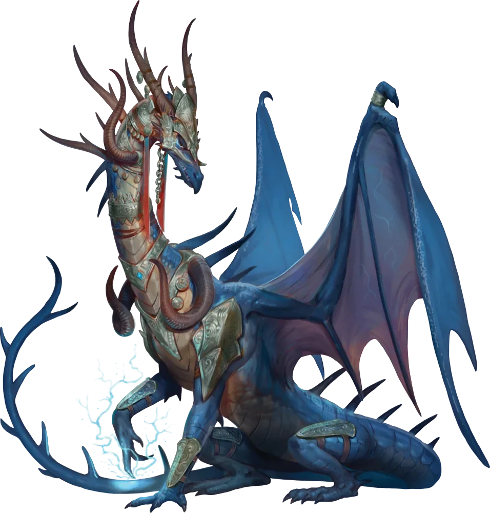

各年龄段数据卡
太古蓝龙是永远领先对手十步的棋道宗师――它们会咧开布满狰狞利齿的龙吻，露出一抹狡诈的狞笑，继而发表一通志得意满的胜利演说、抛出一句机锋妙语，或是仅仅轻描淡写地宣告自己对全局的绝对掌控，比如那句经典的：“一切尽在计划之中。” 尽管在纯粹的肉体蛮力上略逊于太古红龙，但太古蓝龙在世界舞台上却往往更为危险，原因很简单：它们没有红龙那种致命的狂妄自大。卸下了傲慢的枷锁，太古蓝龙得以将自身卓绝的狡黠才智尽数投入实用主义与马基雅维利式的权谋算计之中，将自身利益最大化。功劳与威望不过是与其他筹码无异的可支配资源；而在蓝龙看来，红龙却把这些资源统统挥霍在自己身上，只为安抚那颗脆弱的自尊心。通过隐居幕后、在王座背后精妙地操纵权柄，太古蓝龙得以在远离威胁的安全之所专注于真正重要的大事，稳步壮大自身的力量、财富与影响力。 一座王国之所以会向太古红龙的勒索低头，是因为畏惧抗命的后果；可一旦他们觉得自己有胜算――比如请来了一支强大的英雄小队，或是寻获了一件威能无匹的圣物――就可能立刻反戈一击。反观另一座王国，却会在浑然不觉被操纵的情况下，随着太古蓝龙暗中奏响的曲调翩翩起舞，还真心实意地以为一切抉择皆出自本心。这对巨龙而言毫无风险――唯有稳操胜券的成功，以及将周遭众生玩弄于股掌之上的满足感。 然而，这种生活方式的弊端在于：它的成功建立在一个前提之上――巨龙不仅要有本事算计当事的凡人，还必须在智慧上压倒一切同样潜伏在暗处推行各自阴谋的天才野心家。这就引出了一种真正令人毛骨悚然的可能性：两头太古蓝龙以王国与帝国为代理人，展开一场属于它们自己的盛大快棋对弈。在这盘生死棋局的棋盘上，无数人生被毁、友谊与同盟分崩离析、名誉扫地、王朝覆灭……可与此同时，又有巨额财富拔地而起、新的恋情炽烈燃起、崭新的国度宣告诞生。这一切，全都系于两头将局中众生视作棋盘上微不足道棋子的巨龙幕后黑手一念之间。在旁观者看来，比起死亡与毁灭这些尚可作为战争代价勉强咽下的苦果，想到世间竟有如此多美好的成就与人生际遇可能只是一头蓝龙精心算计的弃子与筹码、从而被剥夺意义与贬低价值，反而更加令人不寒而栗。 试想一下，倘若某天你发现自己热烈美满的恋情或功成名就的事业，从头到尾不过是一头阴谋巨龙精密算计的产物！在意识到自己毫无自主权之后，恐怕很难再提起人生的干劲――不过，也有些人干脆坦然感谢巨龙的一时兴起成全了自己的好运。 苦练而成的完美作为幻术与操纵人心的大师，太古蓝龙深知第一印象至关重要。它们极其爱慕虚荣（尽管远不及太古红龙那般夸张），总会确保自己以最佳状态示人：鳞片打磨得光可鉴人，配饰衬托得天衣无缝，仪态更是威严华贵。太古蓝龙的外表与气度极少不令人心生敬畏。而这份考究远不止停留在仪容之上――太古蓝龙会煞费苦心地确保自己吐出的每一个字词、每一个音节都完美无瑕。刚才那段听起来仿佛信手拈来、即兴发挥的史诗级独白？其实它们已经在私底下排练了好几天了。 永恒蜃景佐拉纳斯特里克斯在传奇巢穴“蜃景王宫”的最深处，“永恒蜃景”佐拉纳斯特里克斯慵懒地斜倚在宏伟的巨龙形王座之上，目光扫过悬浮半空的幻象与一面面反光镜面――每一幅画面都映照着世界各地不同国度正在上演的重大事件。在佐拉纳斯特里克斯看来，真正的力量源于软硬实力的兼施并用：以最低限度的武力与资源投入，最大限度地达成自己的图谋。只需找准支点，她便能轻巧地拨动权力的杠杆，静观多米诺骨牌丝毫不差地倒向她预判的位置。 身为操纵人心的大师，佐拉纳斯特里克斯向来将自己真正的野心与目标、乃至秘密与后手都藏得滴水不漏。就连她麾下成群结队的仆从、密探与操盘手，也只掌握当前任务的情报，绝无可能窥见全盘大局或最终目的。有些幕后黑手或许会争辩说，让行动人员知晓总体目标与深层利害，有助于他们在前线随机应变，而不至于在计划生变时手足无措。但在佐拉纳斯特里克斯看来，她无往不利的秘诀正在于自己超凡入圣的诡道才智与对细节的极致把控：一旦事态偏离计划，她早有备用方案――甚至不止一套备用方案――就位，而且往往早已提前启动，随时能将一切重新拉回正轨。 密探们只清楚当前行动以及过往已完成任务的具体指令；这意味着哪怕他们背叛或被俘，也几乎吐不出任何有价值的情报。甚至极少有人知晓自己终极雇主的真实身份。“永恒蜃景”早在漫长岁月前便创立了诸多下属外围组织，世代招募并训练短寿种族的新血；时至今日，这些组织早已淡忘了创立者的诸多往事，根本无从怀疑幕后之主竟是一头披着幻术伪装的蓝龙。借由这种方式，她稳坐家中、高枕无忧，便能牵动提线让帝王将相随心起舞，坐享源源不断的丰厚利益。 佐拉纳斯特里克斯只将寿命极其漫长的存在纳入最核心的心腹圈，准许他们作为守卫长居大漠深处的蜃景王宫。一旦她决定信任某人，便希望能在此生漫长岁月中一直倚重对方；而对于那些配得上这份殊荣却苦于寿命短暂的俊杰，她也会赐予延寿之法，好让他们继续效命。留在内殿圣所中的皆是她最信赖的心腹，知晓她最深沉的部分秘密，但也终生不得迈出她的领地半步。佐拉纳斯特里克斯可没兴趣让这些心腹充当保卫巢穴的炮灰肉盾去白白送死――一旦假设中的突袭部队打上门来，佐拉纳斯特里克斯会派出整支近卫倾巢出动、将其一举歼灭，同时亲自投射出一道能够施展自身法术与闪电吐息的幻影分身参战迎敌。这些近臣侍从实质上已是她的家人，任何一人被俘都将造成重大挫败，因此她会倾尽全力护他们周全。 顶尖人才网太古蓝龙在组建爪牙与下属网络时，向来只招揽百里挑一的顶尖精英。这些一流人才常被安插在各地的关键要职之上，使蓝龙无需亲自抬一下龙爪，便能跨越千里在世界舞台上纵横捭阖。世上极少有职位能带来比这更丰厚的回报，但绝对的忠诚是一切的前提――任何胆敢背叛太古蓝龙雇主的人，很快就会为自己愚蠢的决定悔恨终生。 |
 太古蓝龙 |